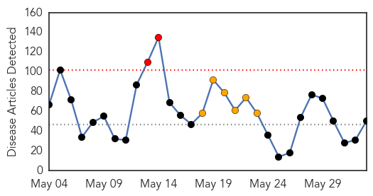
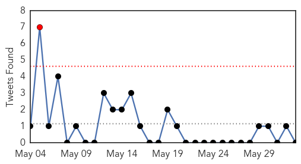
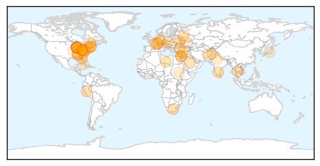
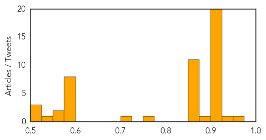
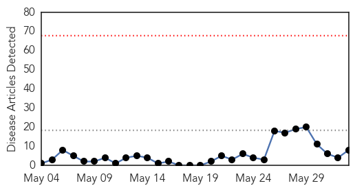
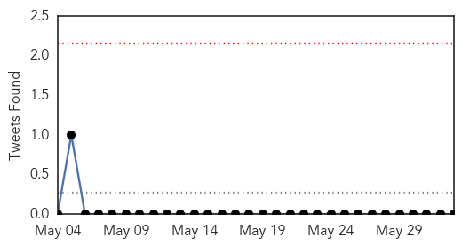
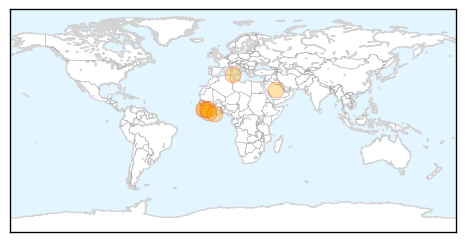

Unknown
30-Day Web Trend
2 alerts, 6 warnings

30-Day Twitter Trend
0 alerts, 0 warnings

Article Locations
Article Confidences
Top Articles:
- 0.972
- Local Health Officials On Watch For MERS
- 0.947
- Drug-resistant TB Strains in South Africa
- 0.917
- Chicago Tribune
- 0.917
- Chicago Tribune
- 0.917
- Chicago Tribune
- 0.917
- Chicago Tribune
- 0.917
- Chicago Tribune
- 0.917
- Chicago Tribune
- 0.917
- Chicago Tribune
- 0.917
- Chicago Tribune
- 0.917
- Chicago Tribune
- 0.917
- Chicago Tribune
- 0.917
- Chicago Tribune
- 0.917
- Chicago Tribune
- 0.917
- Chicago Tribune
- 0.917
- Chicago Tribune
- 0.917
- Chicago Tribune
- 0.917
- Chicago Tribune
- 0.917
- Chicago Tribune
- 0.917
- Family: Woman Being Treated for Legionnaires’ Disease in Marshall County
- 0.910
- The world windows to Thailand
- 0.906
- Florida MERS patient released from hospital
- 0.888
- Texas: Variant Creutzfeldt-Jakob Disease death confirmed, infection likely occurred overseas
- 0.866
- A Massachusetts Water Resources Authority wind turbine turns beside a 2002 megawatt fossil fuel power plant in Charlestown
- 0.866
- West Virginia lawmakers say will fight EPA carbon rule
- 0.866
- Russia says NATO encouraging use of force by Kiev
- 0.866
- Car bomb kills 10 people in Syria's Homs -state media
- 0.866
- The solar-powered Solar Impulse 2 experimental aircraft takes off during its maiden flight at its base in Payerne
- 0.866
- Russia to submit U.N. draft resolution on Ukraine
- 0.866
- Thousands of migrants rescued over the weekend arrive in Sicily
- 0.866
- Seven killed, 15 wounded in clashes in Libya's Benghazi
- 0.866
- Three Turks killed in east Afghanistan suicide bombing-police
- 0.866
- German test pilot Markus Scherdel steers the solar-powered Solar Impulse 2 aircraft during its maiden flight at its base in Payerne
- 0.861
- Public Health Notice: Outbreak of Salmonella infections related to contact with snakes and rodents used to feed them
- 0.773
- Lowell High students, staff to be tested after classmate contracts TB
- 0.722
- UAB says water tests show some levels of legionella present
- 0.576
- Pro-Russia rebels stage day-long attack on Ukrainian border post
- 0.576
- Republicans attack deal with Taliban to free US soldier
- 0.576
- Sudan denies plans to free woman sentenced to death for apostasy
- 0.576
- Parallel lives: the Brussels suspect and the Toulouse shooter
- 0.576
- The Frenchman who fought Hitler as a US soldier
- 0.576
- France arrests four suspected of Syria jihadist recruitment
- 0.576
- Hollande announces plan to redraw French map
- 0.576
- My Paris: Catherine Russell
- 0.575
- Are mangoes making your kids sick?
- 0.554
- Washtenaw County Public Health reminds residents to check for ticks when traveling
- 0.529
- CDC Warns Missourians of Lone Star Tick, Heartland Virus « CBS St. Louis
- 0.523
- Food safety in the United States: Research roundup
- 0.505
- Putting a Public Health Lens on Incarceration
- 0.504
- Patients sectioned 'because of pressure on beds'
Showing top 50 articles...
Top Tweets:
- 0.620
- OEA en Paraguay: prevalece alto grado de injusticia en la distribución de la riqueza: La OEA se ha sumado a ... http://t.co/yDkh4JVQpi
- 0.551
- Empresas internacionales destacan rol de APP para el desarrollo, en foro de la OEA: Las experiencias de dos em... http://t.co/xWa5iiGn3Q
Ebola
30-Day Web Trend
0 alerts, 0 warnings

30-Day Twitter Trend
0 alerts, 0 warnings

Article Locations
Article Confidences

Top Articles:
- 1.000
- West Africa Ebola outbreak still spreading, "situation serious" -WHO
- 1.000
- Medics Travel To Eastern Sierra Leone
- 1.000
- Sierra Leone: Outbreak of deadly virus! Kenema lab in Ebola readiness
- 1.000
- Sierra Leone raises Ebola death toll
- 0.998
- Wendy Orent: Worried about MERS? Worry about polio instead
- 0.989
- 14 Positive, three die of Ebola « Awoko Newspaper
- 0.979
- Christian Aid responds to Ebola outbreak in Sierra Leone - Sierra Leone
- 0.955
- Minority Leader warns over Politicizing Ebola
Top Tweets:
-
No tweets found for Jun 02, 2014